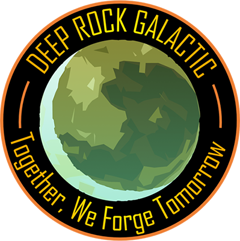
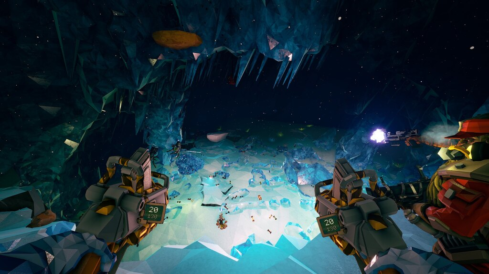

Deep rock galactic 
Bienvenido a deep rock galactic en este gran fps coperativo de 1 a 4 jugadores tendras la chance de controlar a 1 de las 4 clases enanas cada una distinta de la otras.
Gracias a la genereacion procedural, sus 10 tipos de misiones y objetivos asociados al nivel de cada jugador cada partida solo o acompañado DEEP ROCK GALACTIC es difierente haciento de que tenga una rejugabilidad de cientos y cientos de horas
